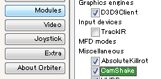
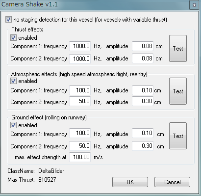

CamShakeは、エンジン噴射や着陸時の衝撃によってコクピットを振動させるMODです。
機体の挙動が変化するわけではありませんが、コクピット視点での臨場感を高めてくれます。
CamShake v1.1 for Orbiter 2010
for Orbiter 2010
と書かれていますが、2010と2016のどちらでも利用できます。
ダウンロードしたファイルを解凍して、中身をOrbiterフォルダに上書き。
ゲームを起動して、LaunchpadのModulesタブを開く。
Miscellaneousの項にあるCamShakeにチェックを入れる。

適当なシナリオでゲームを開始して、F8を押して3Dコクピット視点にする。
Ctrl + F4を押して、Custom functionsを開く。
Camera ShakeをクリックしてからOKをクリック。

多段式ロケット以外の機体なら、no staging detectionにチェックを入れておく。
以下の項目について、左端のenabledにチェックを入れると有効になる。
（エンジン噴射などの強さに応じて、コクピットが震える）
| Thrust effects | エンジン噴射 |
| Atmospheric effects | 大気（高速飛行や再突入など） |
| Ground effect | 地表走行（滑走路を走行時） |
振動の細かさや大きさについては、以下の項目のボックスに数字を入力する。
| frequency | 周波数 |
| amplitude | 振幅 |
右端のTestボタンをクリックすると、揺れ具合を確認することができる。
OKをクリックして設定を終了する。
機体ごとに設定が保存されて、ゲームを起動すると自動的に読み込まれるようになる。